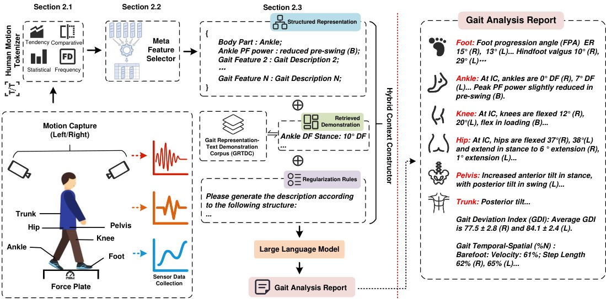

输入是处理后的波形
MotionDecipher的输入是步态周期中的关节角度和地面反作用力波形，输出是按身体部位组织的文字描述。它不只是让通用聊天模型看一张曲线截图，也不是给患者直接下诊断的应用。对使用这类工具的分析人员，我们认为最重要的起点是数据完整性：采集条件、缺失段和左右侧标记应在写报告前检查。若这些基础信息出错，语言流畅只会让问题更难察觉；报告界面应让读者容易回到原始测量。
MotionDecipher · 论文／临床动作解释研究

MotionDecipher的输入是步态周期中的关节角度和地面反作用力波形，输出是按身体部位组织的文字描述。它不只是让通用聊天模型看一张曲线截图，也不是给患者直接下诊断的应用。对使用这类工具的分析人员，我们认为最重要的起点是数据完整性：采集条件、缺失段和左右侧标记应在写报告前检查。若这些基础信息出错，语言流畅只会让问题更难察觉；报告界面应让读者容易回到原始测量。
系统先把运动变化编码为领域特征，再筛选信息、检索相近的专家示例，并把它们交给语言模型。这个结构值得产品团队借鉴的是输入准备，而不是照搬一个长提示词。针对某个关节的描述，审阅者应能问清它来自哪个阶段、使用了怎样的参照。我们建议评估时加入左右对称、边界值及缺失测量等困难样本，检查错误是不是被漂亮措辞掩盖。这里讨论的是对报告工具的验证方法，不是建议读者自行解释临床数据。
作者使用122名患者和46名对照的数据，并在光学动捕与测力台环境中评估。论文把较低成本视频和可穿戴传感器作为后续方向，不能直接写成手机已可替代实验室。对采购决策来说，模型运行时间只是总成本的一部分：仪器、校准、人员、数据处理和医生复核都应计算。我们的判断是，只有把整条工作链记录下来，才能知道自动起草究竟减少了哪一步，是否又把时间转移到了纠错与解释上。
研究当前覆盖已有步态模式的描述，不生成个性化治疗建议，也没有在本次验证中证明长期健康结果改善。采用时应明确谁审核、哪些句子未获支持以及何时应回到人工分析。对于异常但真实的动作，系统不应为了接近示例报告而抹平差异；对于噪声，又不应把测量伪影写成病理变化。我们希望后续研究分别报告这两类错误，并在新的采集设备上重新验证。论文中的模型分数和作者效率主张，都不能替代这些跨设备与临床工作流检查。